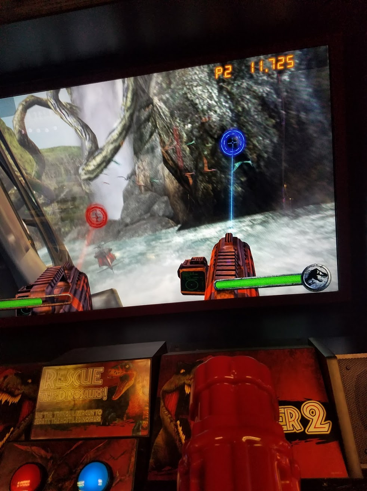
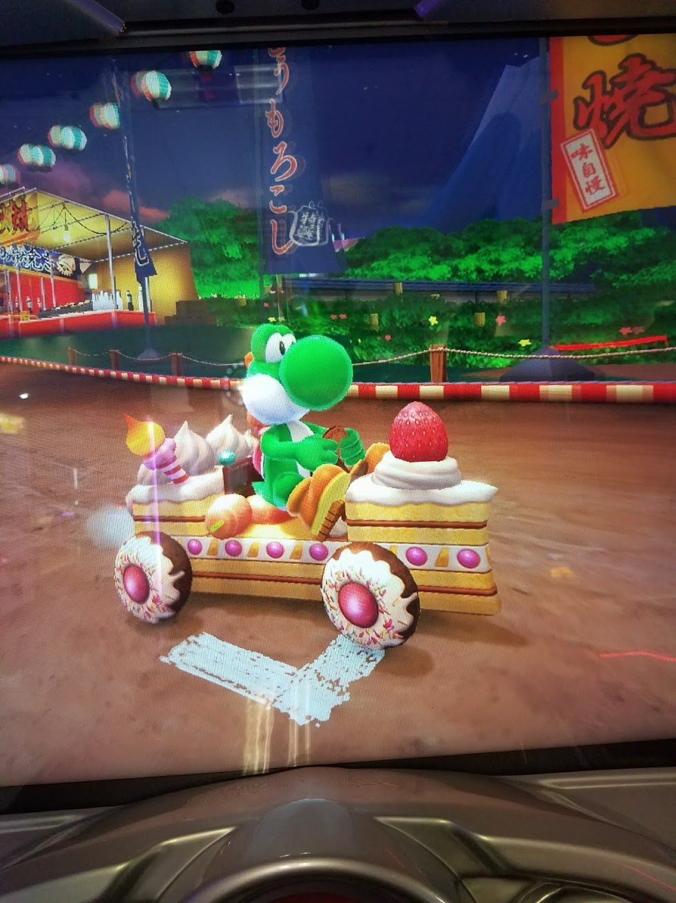

Is there still a charm to arcades? How do these environments and games fit into the modern gaming ecosystem, especially know that we have PC games, console games, and mobile games?
The first game that I played at the arcade was mini golf, which I will not review because it is more of a sport than a game.
The second game that I played at the arcade was the two player Jurassic Park rail shooter game. You and optionally another player sit in what looks like the cab of a jeep with two large turret looking guns on them. When you move them, they move a cursor on the screen, which you point at dinosaurs onscreen. Some of the dinosaurs die really quickly, while some of then you need to shoot specific weak points in order to take down. There are also humans that you can shoot, but that results in you losing life points. You also lose life points if you let a dinosaur get close enough to you to bite you. Each time you died, you could respawn by paying the credits for another life again. The game moved through a series of linear levels on a track. It was challenging, especially because of the way they would fill the screen with dinosaurs covering up one tiny person that blended in.

The third game that I played is Mario Kart Arcade GP DX, which I also played in two player mode. In this game, you use a steering wheel and pedals to race, Mario Kart style, along a series of unique courses. The biggest changes are that instead of having access to a large variety of weapons, you are randomly given three that you could possible receive over the course of the game out of the pool of total weapons. Most of them are not from the regular Mario Kart games, but I did get to use at least one classic item - the bananas. The game was pretty fun, but I am a fan of the regular Mario Kart games. On one hand, it works really well as a multiplayer arcade game. The thing that I missed most was just having controllers that I am more familiar with. The wheel did not make the game substantially more immersive, and there were times when both it and the pedals felt frustrating to use as input devices, as they were less sensitive and responsive than both actual car wheels and pedals and a regular controller.

I think that there is still a charm to arcades. It is fun to be able to walk around with friends and look at the different games, trying them out. Personally, I do not think that arcades are relatively similar to the vast majority of pc or console games these days. I do think that they are relatively similar to current mobile games. In both arcade games and mobile games, there is an emphasis on short session times. In the arcade, this is probably so that the players would go and spend their money on more games. On mobile, I think it has more to do with the idea of shorter play sessions, since many mobile games are intended to be played on the go or to pass the time. Something that I think is indicative of their similarities is that many of the games at this arcade were based on popular mobile games such as Crossy Road and Angry Birds. I do not think that an arcade is necessarily somewhere that I want to go to all the time. However, as somewhere to go once or twice a year to hang out with friends, I think that it is a pretty good time.